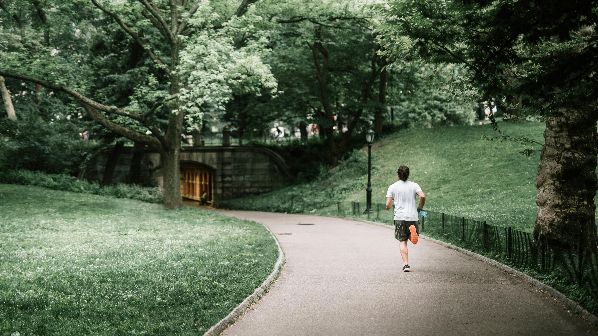
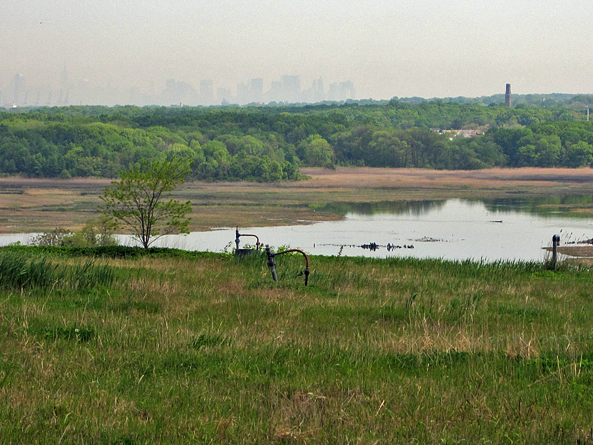

New York City is home to a million buildings and over eight million people, but also to over 20,000 acres of natural areas, which is roughly the same as 15,000 football fields.
Central Park is one of the famous urban green areas in the world. People across the globe have watched Charlotte jog through it, strolled it in with Spider-Man, or gotten lost in it with Kevin. People who’ve never set foot on U.S. soil, can see dreams where their personal daily drama takes place in front of Bethesda Terrace and Fountain.

If all the natural areas of New York City were located in Manhattan, the whole island would be one huge park — 20,000 acres is a lot.
There are many small parks around Manhattan; some are just a few trees squeezed between buildings.
But in the other boroughs, the parks are huge.
Welcome to the largest park in the New York City.
This is Pelham Bay Park.
Before 17th-century colonization, Pelham Bay Park was an archipelago of islands, salt marshes, and beaches.
Some parts actually still look like a Nordic archipelago.
Pelham Bay Park. Photo: Wikimedia Commmons
For decades, the park has offered New Yorkers a place to play sports and gather for celebrations.
Midsummer Day Festival at Pelham Bay Park in the Bronx on June 23, 1911. Photo: Wikimedia Commmons
In total, there are three parks larger than 2,000 acres. Greenbelt Park on Staten Island features forests, wetlands, and waterways, offering both active recreation and peaceful nature escapes.
Freshkills Park is a newcomer, still under development. However, several parts are already open to the public. It is set to open in phases through 2036, when it will become the largest park developed in NYC in over a century—transforming the world’s largest former landfill into a vast public space with playgrounds, sports fields, trails, art installations, and more.

Freshkills Park is goign to be fully open in 2036. Photo: Wikimedia Commons
If Freshkills is still under development, Van Cortlandt Park in Bronx has a long history. It was created in 1888.
Molly Dewson and Polly Porter, Van Cortlandt Park, Bronx 1925. Photo: Wikimedia Commmons
The idea of turning old landfills into parks is not new.
In the 1930s, NYC Parks Commissioner Robert Moses saw the 1939–40 World’s Fair as a chance to turn a former dump into Flushing Meadows Park. The fair showcased new technology and ideas for the future, with a layout inspired by earlier world expos. After the fair, the area was improved with thousands of trees, and some original features like Meadow Lake and the New York City Building still remain today.
The Rocket Thrower is a massive bronze sculpture designed by Donald De Lue for the New York World’s Fair of 1964-65. Photo: Pexels
While the most famous park in Brooklyn might be Prospect Park, the largest park in the borough is Marine Park, located by the seashore.
Marine Park has 530 acres of grassland and salt marsh, with trails and a nature center where visitors can learn about local plants and animals. It also offers many ways to have fun, including a golf course, sports fields, playgrounds, bike paths, and a spot to launch kayaks.
The gate of Marine Park in Brooklyn Photo: Wikimedia Commons
Bronx Park is home to diverse wildlife, forests, and the scenic Bronx River. It offers a unique natural habitat with many plants, animals, and birds. The park also includes major attractions like the Bronx Zoo and New York Botanical Garden. Visitors can enjoy playgrounds, sports fields, and bike paths throughout the park.
Bronx Zoo is a home for many animals, including peguines. Photo: Wikimedia Commons
This tour of New York City’s biggest parks shows that if you're looking to escape the paved sidewalks, the city still offers quiet corners and a bit of privacy under the trees. Whether you're seeking nature, play, or peace, there's a patch of green here for everyone.
.jpg)


_006.jpg)